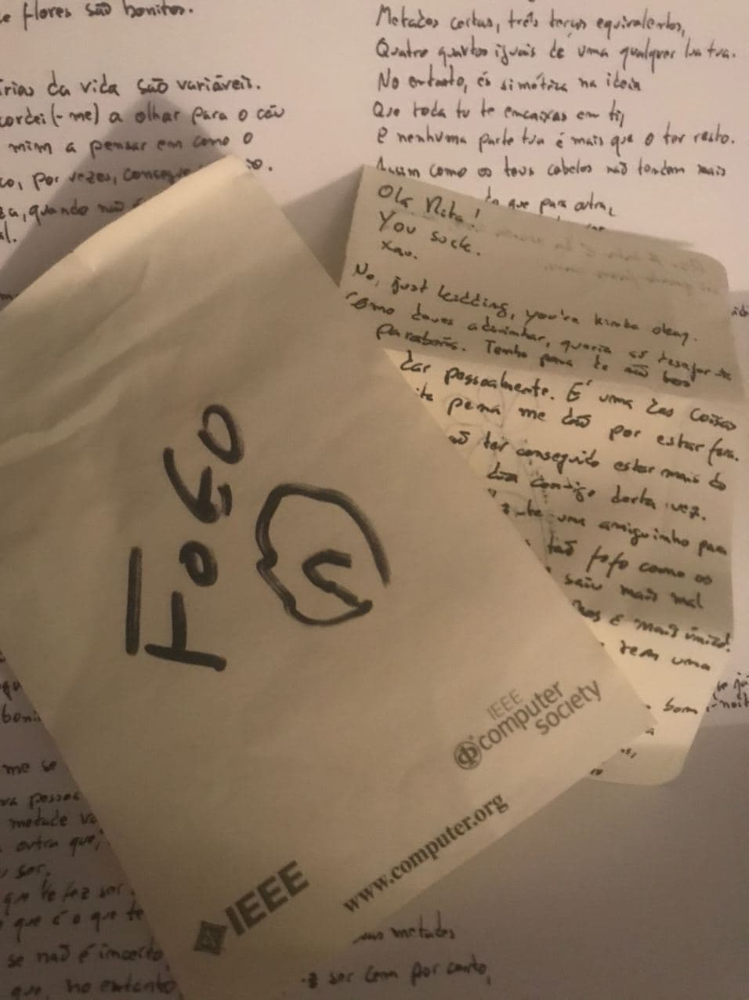

[SQUEEK]

este ano eu
não poderei levar-te
os frutos do mar
ainda assim
desejo-te um super
aniversário
ofereço-te
este jogo de haikus
para preencher
Diogo, queres
uma assinatura
do jornal mapa?
podes escolher
diz-me o que preferes
dos cenários
Parti-te tudo
Não sentiste de noite?
Foi gentilmente
pois é, ah ah ah
as minhas machadinhas
és o mais melhor
Tiago Aires
Ferreira Martins Lêdo
melhor amigo
vinte e três de
dezembro do ano de
dois mil e vinte